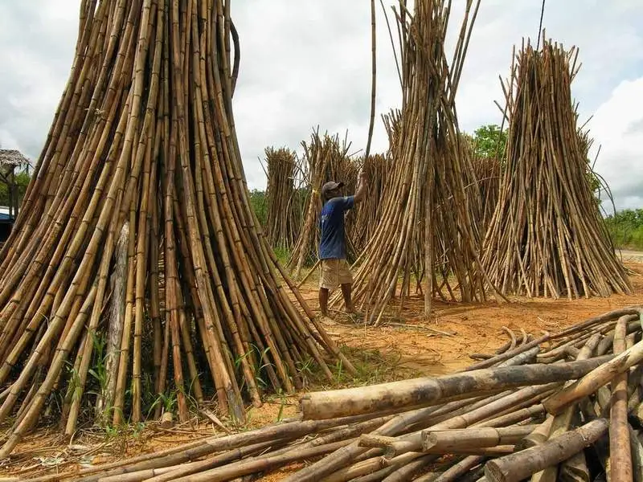

Rattan
Rattan is a natural material derived from climbing palm species belonging to the genus Calamus, Daemonorops, and related varieties. It is widely found in tropical regions of Southeast Asia, particularly in the Philippines, where it has long been used in traditional crafts, furniture-making, and construction. Rattan grows abundantly in forests and is known for its fast growth and renewability, making it one of the most sustainable natural materials used in Filipino design.
Unlike solid wood, rattan has a solid, flexible core and a long, slender form that allows it to be bent, curved, and shaped without breaking. When freshly harvested, rattan poles are highly pliable; once dried and treated, they become strong, lightweight, and durable. This unique combination of strength and flexibility sets rattan apart from many other natural materials.
Rattan has a smooth surface and natural grain, typically ranging in color from pale yellow to honey brown. When finished, it develops a warm, organic appearance that enhances both traditional and contemporary interiors. Its natural texture creates a sense of comfort and craftsmanship, making spaces feel inviting and relaxed.
Functionally, rattan is valued for its load-bearing capacity despite its light weight. It is strong enough for structural furniture components yet light enough to be easily transported and assembled. This makes it ideal for chairs, tables, bed frames, shelving, and woven furniture. In traditional Filipino homes, rattan was commonly used for seating, baskets, and storage items because of its durability and availability.
Rattan is also known for its excellent breathability. Furniture made from rattan allows air to circulate freely, making it especially suitable for the tropical climate. This characteristic provides comfort in warm and humid conditions and reduces heat buildup, particularly in seating and bedding applications.
From an environmental perspective, rattan is considered an eco- friendly and sustainable material. It regenerates quickly, requires minimal processing, and produces less waste compared to hardwoods. Responsible harvesting supports forest conservation, as rattan grows alongside trees and encourages forest preservation rather than deforestation.
In modern architecture and interior design, rattan has experienced a resurgence due to the growing demand for sustainable, natural, and locally sourced materials. Designers incorporate rattan into residential homes, resorts, cafés, hotels, and commercial spaces to create a tropical, coastal, or bohemian aesthetic. It is often combined with wood, metal, glass, and textiles to balance traditional warmth with modern design.
Overall, rattan is more than just a furniture material—it represents Filipino craftsmanship, sustainability, and adaptability. Its versatility, strength, and natural beauty make it a timeless local material that continues to evolve while remaining deeply rooted in Philippine culture and tradition.
Types of Rattan
There are 5 different types of Rattan. Natural Rattan, Treated Rattan, Skin Rattan, Core Rattan, and lastly Manufactured Rattan.
Read MoreUses And Application
There are 6 Uses and Application of Rattan. Furniture, Interior Design, Handicrafts, Lighting, Outdoor Use, and Cultural Use.
Read More